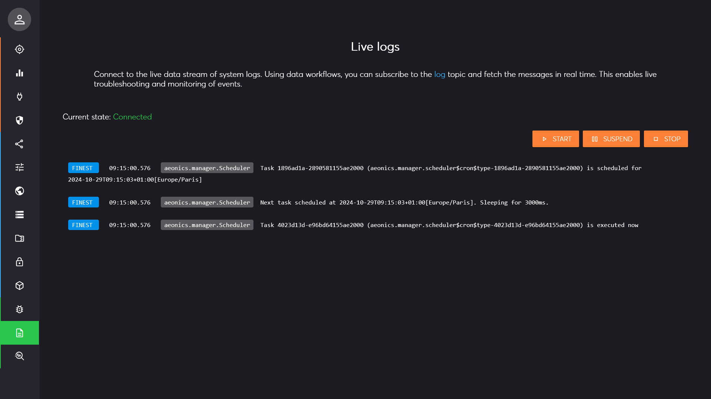
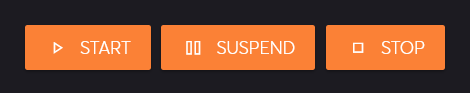
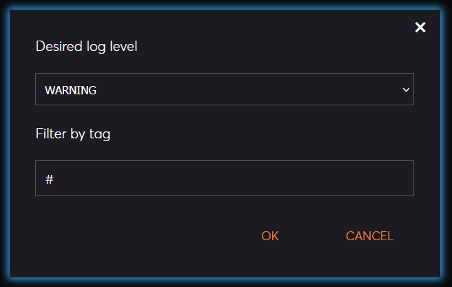
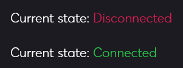
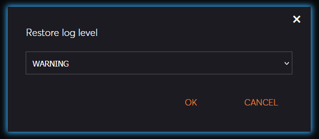
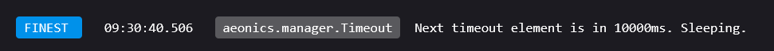
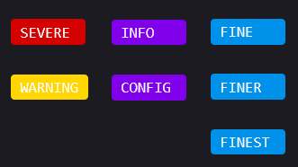

Management Interface Page: Logs
Description
This page allows receive the live stream of event logs. All the logs are managed by the logger manager and are handled like any other input data. Therefore, we can use the publish-subscribe mechanism to display the logs in real time using a WebSocket connection.

Start / Stop
There are 3 actions available in the top right part of the page: Start, Suspend, and Stop.

When you click on the Start button, you can choose the log level to collect. This will change the configuration parameter
aeonics.manager.logger > level accordingly. You can also choose a filter to only return relevant logs, this is the pub-sub capture filter
(the hashtag # means capture everything) that applies to the log entry tag.

Once the live capture is enabled, the connection indicator will be adjusted in the top left part of the page.

When you click on the Suspend button or if you leave the page, the connection to the live stream is interrupted and the current log level stays as-is.
When you click on the Stop button, you can restore the log level to another value if needed to prevent too much unattended logging to happen.

Log Details
The main central region of the page will display log entries as they are generated by the system. Each log line is composed of 4 parts:

- The log level
- The time at which the entry was generated
- The tag (usually a class name) used to categorize the log entry
- The log text
There are 7 standard log levels by order of importance: SEVERE, WARNING, INFO,
CONFIG, FINE, FINER, and FINEST. They are identified by a different color.

There are maximum 100 entries that can be displayed at once on the page for performance reasons. If more entries appear, older ones are removed.